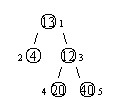
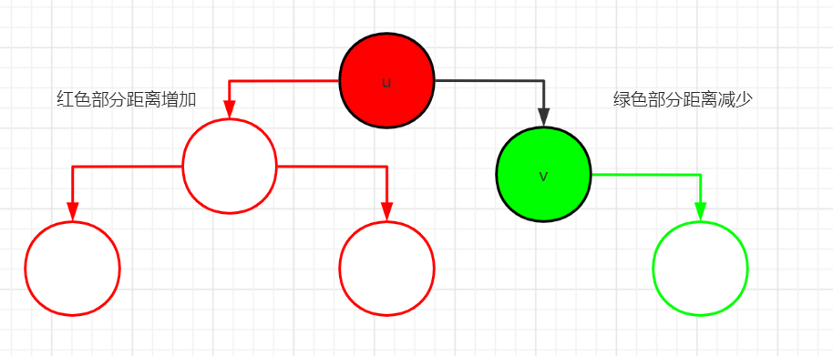

# P1364
# 题目描述
设有一棵二叉树，如图：

其中，圈中的数字表示结点中居民的人口。圈边上数字表示结点编号，现在要求在某个结点上建立一个医院，使所有居民所走的路程之和为最小，同时约定，相邻接点之间的距离为 11。如上图中，若医院建在 1 处，则距离和 $ =4+12+2\times20+2\times40=136=4+12+2×20+2×40=136 = 4\times2+13+20+40=81=4×2+13+20+40=81$。
# 输入格式
第一行一个整数 n，表示树的结点数。
接下来的 n 行每行描述了一个结点的状况，包含三个整数 w, u, v，其中 w 为居民人口数，u 为左链接（为 0 表示无链接），v 为右链接（为 0 表示无链接）。
# 输出格式
一个整数，表示最小距离和。
# 数据规模与约定
对于 的数据，保证 ，，。
# Floyd
结点数不大， 的复杂度可以接受
求出每两个节点之间的距离，再穷举计算总距离
ac 代码：
#include <iostream>
#include <cstdio>
using namespace std;
struct my_struct { int weight; int left; int right; } tree[105];
const int INF = 0x3f3f3f3f;
int n, ans = INF, dis[105][105];
int main()
{
freopen("in", "r", stdin);
cin >> n;
// 初始化距离矩阵
for (int i = 1; i <= n; i++)
for (int j = 1; j <= n; j++) {
if (i == j) dis[i][j] = 0; // 自己与自己距离为0
else dis[i][j] = INF;
}
// 建树
for(int i=1;i<=n;i++) {
cin >> tree[i].weight >> tree[i].left >> tree[i].right;
if (tree[i].left) dis[i][tree[i].left] = dis[tree[i].left][i] = 1;
if (tree[i].right) dis[i][tree[i].right] = dis[tree[i].right][i] = 1;
}
// Floyd 注意k是最外层循环变量
for (int k = 1; k <= n; k++)
for (int i = 1; i <= n; i++)
for (int j = 1; j <= n; j++)
if (dis[i][j] > dis[i][k] + dis[j][k])
dis[i][j] = dis[i][k] + dis[j][k];
// 枚举计算最小值
for(int i=1;i<=n;i++) {
int temp = 0;
for (int j = 1; j <= n; j++) temp += dis[i][j] * tree[j].weight;
if (temp < ans) ans = temp;
}
cout << ans;
return 0;
}
# 带权树的重心
若 n 的数据再大一点的话，Floyd 便会超时。
查看题解发现求带权树重心的算法。
# 树的重心的定义：
树若以某点为根，使得该树最大子树的结点数最小，那么这个点则为该树的重心，一棵树可能有多个重心。
# 树的重心的性质：
1、树上所有的点到树的重心的距离之和是最短的，如果有多个重心，那么总距离相等。
2、插入或删除一个点，树的重心的位置最多移动一个单位。
3、若添加一条边连接 2 棵树，那么新树的重心一定在原来两棵树的重心的路径上。
# 怎么求树的重心：
设 表示以 u 为根的总距离， 表示以 u 为根的子树的大小（结点数，此题每个点要乘以权值，下文结点数均指此）。
显然，
首先我们任意以一个点为根 dfs 一遍，求出以该点为根的总距离。方便起见，我们就以 1 为根。
接下来就是转移，对于每个 u 能达到的点 v，有：
- 当根从 u 变为 v 的时候
- 考虑以 v 为根的子树
- v 的子树的所有节点原本的距离要到
- 现在只要到 了，每个结点的距离都减少 1
- 那么总距离就减少
- 考虑以 v 为根的子树以外的所有节点
- 以 v 为根的子树以外的所有节点，原本只要到 就行了
- 现在要到，每个节点的路程都增加了 1
- 总路程就增加了，其中 就是我们预处理出来的整棵树的大小，减去 就是除以 v 为根的子树以外的结点数。
- 考虑以 v 为根的子树

最后取最小值，得解。时间复杂度